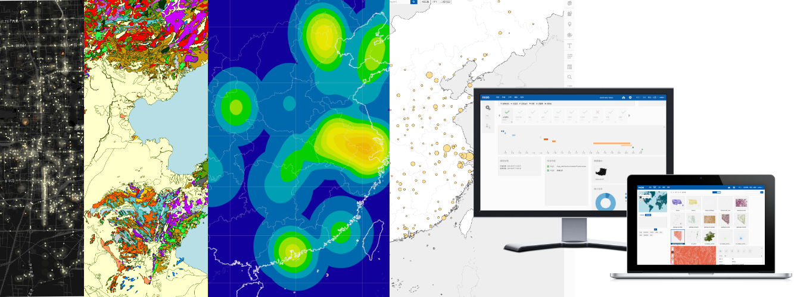
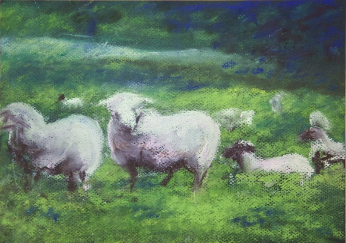
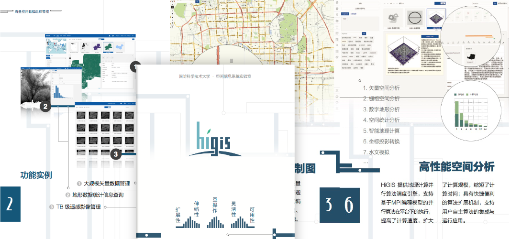
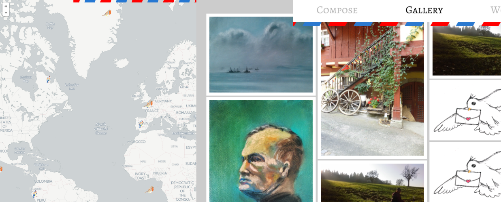

<section id="higis" class="work level2">
    <h2>HiGIS: 高性能地理信息系统</h2>
    <div class="higis">
        
        <ul>
            <li>开源控件库 <a href="http://yarray.github.io/hui/demo/" target="_blank">http://yarray.github.io/hui/demo/</a></li>
            <li>系统概念 <a href="http://www.geocomputation.org/2013/papers/26.pdf" target="_blank">When GIS Meets HPC</a></li>
            <li>计算引擎概念 <a href="https://www.researchgate.net/publication/303805707_Geographical_Workflow_System_over_HPC_Clusters_Based_on_MPI" target="_blank">Geographical Workflow System ...</a></li>
        </ul>
    </div>
</section>
<section id="绘画" class="work level2">
    <h2>绘画</h2>
    <div class="painting">
        
        
        
        
        
    </div>
</section>
<section id="设计" class="work level2">
    <h2>平面设计</h2>
    <div class="design">
        <div class="booklet">
            
        </div>
        <div class="other">
            
        </div>
    </div>
</section>
<section id="开源项目" class="work level2">
    <h2>开源项目</h2>
    <div class="oss">
        
        <ul>
            <li>集群管理工具 <a href="https://github.com/yarray/fake-xcat" target="_blank">fake-xCAT</a></li>
            <li>简历生成工具 <a href="https://github.com/yarray/resume" target="_blank">resume</a></li>
            <li>电子明信片 <a href="https://github.com/yarray/AviPost.web" target="_blank">AviPost</a></li>
        </ul>
    </div>
</section>
